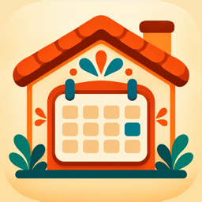

CasitaCal
CasitaCal is a private family calendar display for the Guardiola household's kitchen iPad. It shows our shared Google Calendar, chores, lists and meals at a glance.
It is a personal project and is not offered to the public.

CasitaCal is a private family calendar display for the Guardiola household's kitchen iPad. It shows our shared Google Calendar, chores, lists and meals at a glance.
It is a personal project and is not offered to the public.